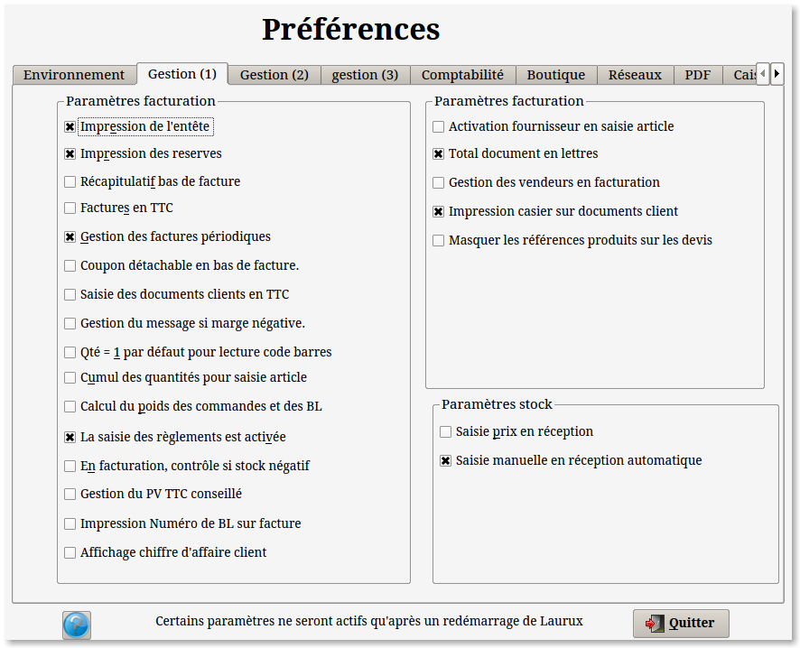
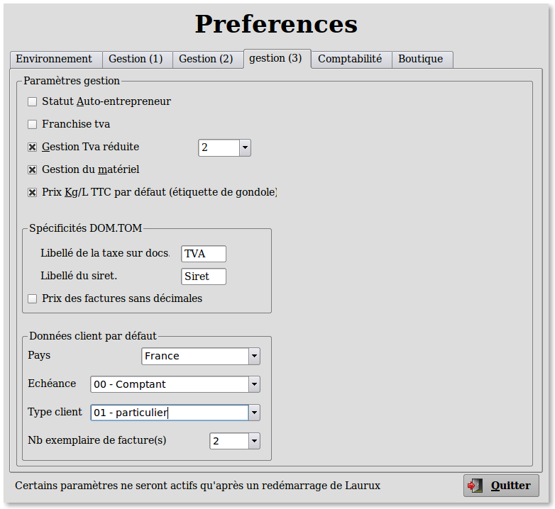
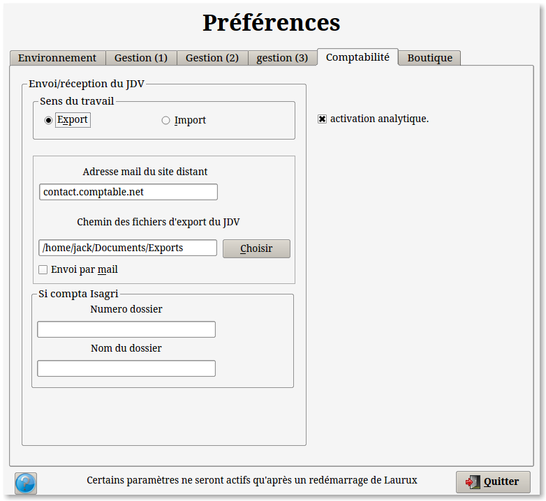
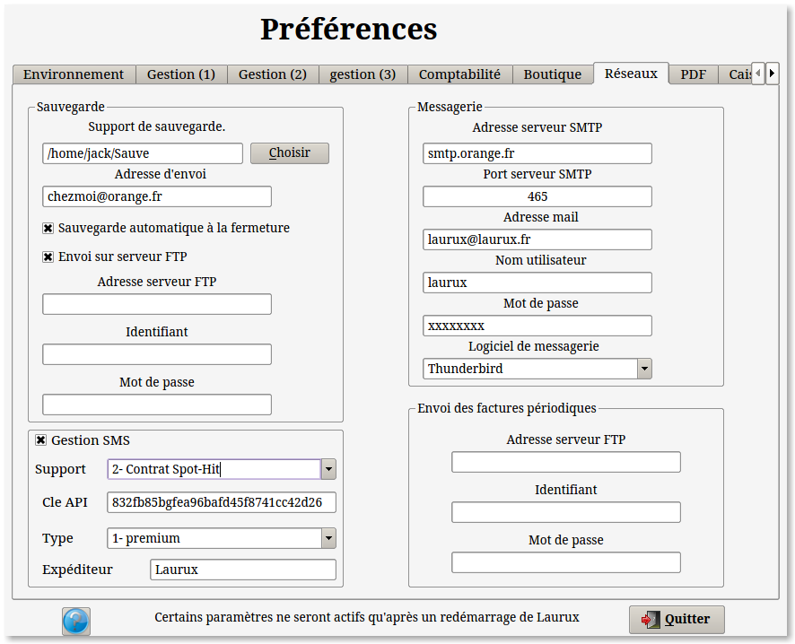

~ Comptabilité et Facturation Laurux ~

~ Comptabilité et Facturation Laurux ~ |
|
|
|
L'option " Comptabilité
seule " vous permet de
travailler sur une comptabilité sans relation avec la facturation.
L'option " Facturation seule " vous permet de travailler sur une Facturation sans relation avec la comptabilité. Toutefois le journal des ventes existes quand même. Il pourra être soit imprimé sur papier soit exporté sous forme de fichier Csv.
L'option " Comptabilité & facturation " vous permet de travailler sur une facturation en relation avec la comptabilité .
L' option " Gestion du son "
vous permet d'activer le son. Le son est utilisé lors de
l'ouverture et de la fermeture de Laurux mais aussi sur les messages
d'erreur.
L' option " Synthèse
vocale "
vous permet d'activer la synthèse vocale. Cette synthèse vocale est un
doublon sonore de certains messages d'information ou d'attention (voire
d'erreur) affichés à l'écran.
La synthèse vocale de Laurux utilise la bibliothèque
Svox Pico-TTS. Pour installer Pico, faites un copier coller, dans un
terminal,
de la ligne ci-dessous
sudo apt-get install libttspico-utils littspico-data
libttspico-dev
Le bouton " Tester " permet d'écouter un message vocal émis par
Zénité.
L'option " Affichage des astuces " sera utilisé par le programme de facturation pour mettre un écran d'astuce du jour au démarrage de Laurux.
L'option " Couleurs
des fenêtres par défaut" définira quelle sera
l'apparence de Laurux.
Si l'otion est cochée alors on utilisera les couleurs de Zénité sinon on
aura celles du gestionnaire de fenêtre.
L'option " Police de Laurux" permettra d'adapter la taille de Laurux en fonction de la résolution de l'écran.
L'option " Fond
d'écran"
permettra de changer le fond de l'écran d'acceuil de Laurux. Le fond
d'écran doit être copié dans le répertoire ~/Laurux3/Fonds_Laurux.
L'option " Coordonnée
du mail" servira à renseigner les coordonnées de votre mail.
Ces données seront utilisées par le programme d'envoi des mailings.

L'option "Impression de l'entête" sera utilisé par le programme de facturation pour imprimer une entête dans le cas ou le papier utilisé n'est pas du papier pré-imprimé.
L'option "Impression des réserves" sera utilisé par le programme de facturation pour imprimer les réserves d'usage dans le cas ou le papier utilisé n'est pas du papier pré-imprimé.
L'option "Récapitulatif bas de facture" . Si elle est activée, alors on aura en bas de facture, le total des produits, le total de la main d'oeuvre et celui des remises.
L'option "Facture
TTC". Si
elle est activée alors la facture sera imprimée en TTC.
L'option "Facture est activé"
. Si elle est activée, alors en saisie des documents clients, c'est le
type "Facture" qui sera activé par défaut au lieu du type BL.
L'option "Coupon détachable"
. Si elle est activée, alors en bas des factures, on aura un coupon
détachable que le client pourra joindre à son réglement.
L'option "Gestion du message
si marge négative"
. Si elle est activée, alors en saisie des documents clients un message
s'affichera pour avertir que la marge de la ligne saisie est négative.
L'option " Qté
=
1 pour lecture code barre
"
. Si cette option est activée alors la lecture d'un code barre générera
automatiquement la validation du produit avec une quantité égale à un.
L'option " Cumul
des
quantités pour saisie article ".
Si cette option est cochée alors les quantités se cumuleront
automatiquement avec celles des mêmes produits déjà saisis dans le
documents. Sinon on aura un message qui demandera ce qu'on veut faire,
soit créer une nouvelle ligne soit cumuler.
L'option "Calcul du poids des
commandes et des Bl".
Si cette option est cochée alors en fiche article il y aura une zone
supplémentaire de saisie appelée "Poids".
En commande fournisseur et en BL client on aura deux zones d'affichage
supplémentaires. Une zone "Poids du produit"
et une zone " Poids
total commande " ou " Poids total Bl ". Ces zones seront actualisées
au fur et à mesure des saisies.
L'option "Prix Kg/L TTC par
défaut".
Si cette option est affichée alors, en impression des étiquettes de
gondole l'option "Impression du prix TTC du
Kilo/litre/M3" sera activée.
L'option "La saisie des
réglements est activée".
Si cette option est cochée alors en impression de facture vous pourrez
saisir le montant du réglement ce qui générera une écriture de
trésorerie.
L'option "Contrôle si stock
négatif".
Si cette option est cochée alors en saisie des documents clients on ne
pourra pas saisir de produits dont le stock est égal ou inférieur à
zéro.
L'option "Activation
MO".
Si cette option est cochée alors en saisie des documents clients c'est
la MO qui sera activée par défaut au lieu des produits.
L'option "Gestion du PV
conseillé".
Si cette option est cochée alors en saisie des documents clients le
programme affichera le PV conseillé du produit.
L'option "Code MO pour suivi". La marge du suivi d'affaire est calculée à partir du prix de revient de ce code MO.
L'option "Saisie prix en réception". Cette option permet l'affichage d'une zone contenant les éléments de prix des produits saisis. Cela permet la modification des PA et des PV en temps réel. Si cette option n'est pas active alors le panel des prix ne s'affichera pas.
L'option "Saisie manuelle en réception automatique". Si cette option n'est pas activée alors les réceptions automatiques afficheront les produits commandés et initialiseront les quantités reçues égales aux quantités commandées, sinon les quantités reçues seront initialisées à zéro.
L'option "Logo"
, si elle est cochée, provoquera l'affichage d'un logo sur vos
documents. Ne pas oublier de renseigner le chemin et le nom du fichier.
Attention ! Dimensions maxi
du logo 800 x 400 pixels.
L'option "Copie PDF des
documents clients".
Cette option permet de saisir l'endroit ou seront stockés les documents
PDF. Dans les fiches clients et fournisseurs, on a la possibilité de
définir si on souhaite gérer la copie des documents. Si cette option
est active alors, le programme d'impression va générer une copie PDF
dans le chemin défini içi. Dans le cas d'une installation réseau il est
fortement conseillé de travailler avec un répertoire partagé.

La zone " Texte
fixe"
permettra de définir le texte qui s'imprimera par défaut sur les
factures. Si cette option n'est pas activée alors c'est le mode de
réglement et la date d'échéance saisis dans la fiche du client qui
s'imprimera. Ex: Réglement par chèque le 23.04.2011
La zone " Texte de validité des devis" apparaitra en bas de chaque devis imprimé.
L'option " En achat travail avec le coefficient ou le TMQ" determinera l'affichage de la valeur du coefficient ou celle du taux de marque lors des commandes et des réceptions de marchandises.
Si on souhaite afficher une photo dans les produits, l'option " Chemin des photos des produits" permettra de définir le répertoire qui sera proposé par défaut.
L'option " Gestion des caisses" permettra d'activer le module. De plus, si on souhaite gérer les cartes de fidélité, il faudra saisir le nombre de points nécessaires pour gagner X Euros.
La zone" Serveur de mises à jour " permettra d'activer la mise à jour des fichiers d'un site distant. Pour plus de détail concernant l'utilisation du serveur de mise à jour voir le sujet sur le serveur de mises à jour

Si vous êtes auto-entrepreneur, il faudra activer l'option " Statut auto-entrepreneur" et ainsi, aucun calcul de TVA ne s'effectuera lors de la saisie des factures et de plus les mentions légales de ce statut s'imprimeront en bas de chaque facture. La franchise de TVA fonctionne d'une façon similaire.
L'option " Tva
réduite ".
Dans le cas ou la zone est activée il sera necessaire de saisir
le taux dans la fenêtre attenante au bouton.Ce paramètre
sera utilisé lors de la saisie des factures afin de calculer la
Tva à partir du taux défini ici et non à partir de
la valeur normale.
L'option "Gestion du matériel"
permettra d'activer ce module.
Les "Données client par défaut"
s'afficheront automatiquement lors de la création des clients.

Les
options concernant la comptabilité permettront de définir si le sens du
travail est en export des données ou en import.
Concernant la gestion de l'export/import se reporter
a la
documentation specifique à ce sujet.
Il est également possible, dans cet onglet,
d'activer la comptabilité analytique.

La fonction d'E-mailing utilisera les données de messagerie. Il faudra donc renseigner soigneusement ces données. Ne pas oublier de renseigner les données SSL (nom d'utilisateur et mot de passe).
La gestion des SMS offre deux possibilités :
Soit passer par une clé Huawei ou un téléphone Nokia (c'est la solution
lourde) soit utiliser les services d'un fournisseur de SMS Pro tel que
Spot-Hit. Cette solution est très simple a mettre en ½uvre et
fonctionne sur l'ensemble des postes.
Voir le sujet sur la gestion des
SMS
Vos choix s’enregistrent automatiquement en quittant le programme.
----------------------------------------------------------------------------------------------------------------------